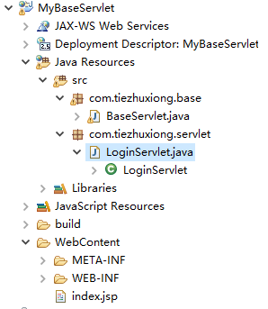
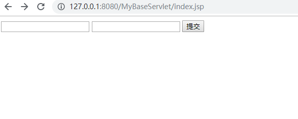
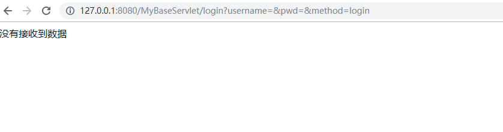
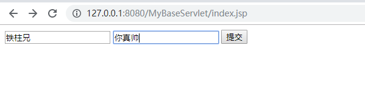
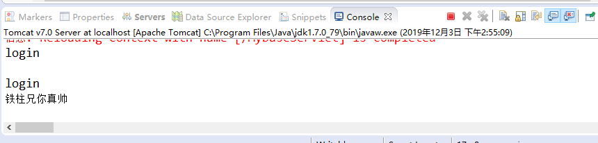

对于初学者来说，每次前端传数据过来就要新建一个类创建一个doget、dopost方法，其实铁柱兄在大学的时候也是这么玩的。后面铁柱兄开始认真了，就想着学习点容易的编程方式，其实说白了就是想偷懒。
新建一个Web项目，创建包、类。然后编写BaseServlet类。

package com.tiezhuxiong.base;
import java.io.IOException;
import java.lang.reflect.InvocationTargetException;
import java.lang.reflect.Method;
import javax.servlet.ServletException;
import javax.servlet.annotation.WebServlet;
import javax.servlet.http.HttpServlet;
import javax.servlet.http.HttpServletRequest;
import javax.servlet.http.HttpServletResponse;
import javax.servlet.http.HttpSession;
@WebServlet(name = "BaseServlet")
public class BaseServlet extends HttpServlet{
/**
* 创建一个公共的servlet类，所有从前端过来的请求都要走这个类
* 写一个公共的servlet，以后前端只需要把method送上来，
* 可以根据method送上来的值去找下面的方法名。减去了每次都dogetdopost方法
* 注：方法名一定要与method送上来的值相同。需要urlPatterns注解
* 如：提交的地址是test，则注解urlpatterns里要写/test
*
* 2019.12.3
*/
private static final long serialVersionUID = 1L;
protected void service(HttpServletRequest req, HttpServletResponse resp) throws ServletException, IOException {
req.setCharacterEncoding("utf-8");
resp.setContentType("html/text;charset=utf-8");
try {
// 获取前端传过来的method字段
String method = req.getParameter("method");
System.out.println(method);
// 获取到当前对象的字节码文件
Class clazz=this.getClass();
// 拿到字节码对象中的方法
Method clazzMethod = clazz.getMethod(method, HttpServletRequest.class, HttpServletResponse.class);
// 执行方法
clazzMethod.invoke(this,req,resp);
} catch (NoSuchMethodException e) {
e.printStackTrace();
} catch (IllegalAccessException e) {
e.printStackTrace();
} catch (InvocationTargetException e) {
e.printStackTrace();
}
}
}
然后开始编写LoginServlet类：
package com.tiezhuxiong.servlet;
import java.io.IOException;
import javax.servlet.annotation.WebServlet;
import javax.servlet.http.HttpServletRequest;
import javax.servlet.http.HttpServletResponse;
import com.tiezhuxiong.base.BaseServlet;
@WebServlet(name="LoginServlet",urlPatterns="/login")
public class LoginServlet extends BaseServlet{
/**
*
*/
private static final long serialVersionUID = 1L;
public void login(HttpServletRequest req,HttpServletResponse resp) throws IOException {
String username=req.getParameter("username");
String pwd=req.getParameter("pwd");
System.out.println(username+pwd);
if(username!=""&&pwd!=""){
resp.sendRedirect("https://www.cnblogs.com/");//接收到值的话就跳转到博客园首页
}else{
resp.setContentType("text/html;charset=utf-8");
resp.getWriter().write("没有接收到数据");//没接收到的提示
}
}
}前端jsp界面：
<%@ page language="java" contentType="text/html; charset=UTF-8"
pageEncoding="UTF-8"%>
<!DOCTYPE html PUBLIC "-//W3C//DTD HTML 4.01 Transitional//EN" "http://www.w3.org/TR/html4/loose.dtd">
<html>
<head>
<meta http-equiv="Content-Type" content="text/html; charset=UTF-8">
<title>Insert title here</title>
</head>
<body>
<form action="login">
<input type="text" name="username">
<input type="text" name="pwd">
<input type="hidden" name="method" value="login"><!-- 后端根据value的值寻找方法 -->
<button>提交</button>
</form>
</body>
</html>现在我们把项目跑起来看看




好了，本期的教程就到这里了，后续铁柱兄将继续给大家带来新的代码。谢谢观赏~
觉得有用的话，记得点个赞呦。